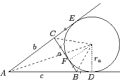

| |
一個三角形
 含有各種各樣的幾何量，例如它的三邊邊長、三個內角的角度、面積、外徑（外接圓的半徑）和內徑（內切圓的半徑）等等。而它們之間，又存在著各種各樣的函數關係。本節所要研討者，乃是它們之間的基本函數關係，通稱之為三角定律。 含有各種各樣的幾何量，例如它的三邊邊長、三個內角的角度、面積、外徑（外接圓的半徑）和內徑（內切圓的半徑）等等。而它們之間，又存在著各種各樣的函數關係。本節所要研討者，乃是它們之間的基本函數關係，通稱之為三角定律。
1. 三角形面積公式與正弦定律
[ 圖 3-6 ]
如 [圖 3-6] 所示，我們將以 a, b, c 分別表示角 A, B, C 的對邊邊長，
 表示其面積。易見 ，所以 表示其面積。易見 ，所以
同理：
。由此即得下述正弦定律：
2. 垂直投影與餘弦定律
[ 圖 3-7 ]
由 [圖 3-7] 和 Cosine 的定義，即有
由上述
的線性方程組即可解得
[註]：S.S.S. 疊合條件的幾何意義是
的三邊邊長業已唯一地確定了它的三個內角。換句話說，其三個內角分別是它的三邊邊長的函數。上述餘弦定律給出了它們的具體表達式，亦即
同樣的，三角形的一組疊合條件如 S.A.S., A.S.A. 的幾何意義其實也就是三角形的其他變量都可以用這樣所給的一組自變元加以表達。[參看習題 (8) 和 (9)。]
3. 正弦定律之第二証法
我們也可以用餘弦定律來推導正弦定律，即
因為上式右側是 a, b, c 的對稱式，所以
而
,
,
都是恆正的，所以由 (3.15)-式和
(3.16)-式可以推論
其中
,
乃是常用的簡約寫法。再將 (3.16')-式和
(3.13)-式相對比，即得
其實，上式之右側是可以分解成四個一次因式的乘積者，而且此事可以從一個簡單的幾何常識推論而知，亦即三角形的三邊邊長中，若有其一為其他兩者之和，則其面積為零。亦即
將上述事實和餘式定理相結合，即可推論它含有因式
至此即可直接驗証
通常把它改寫成
此式在西方遠在公元前三世紀已由 Archimedes 所求得，但是因為訛傳而稱之為
Heron's formula. 而在中國南宋時期，秦九韶也獨立地求得此一公式。
4. 正弦定律的第三証法
[ 圖 3-8 ]
如 [圖 3-8] 所示，O 是
的外接圓之圓心，R 是其半徑，
則是一條直徑。由熟知的圓周角等于圓心角之半可見
而且
 是直角三角形。所以 是直角三角形。所以
亦即
將 (3.19)-式和 (3.13)-式相比，即得外徑 R 的公式
5. 內切圓半徑和半角公式
[ 圖 3-9 ]
如 [圖 3-9] 所示，O' 是
的內切圓之圓心，它是三個內角分角線的共交之點。再者
,
和
的高都是內徑 r 。即有
由此即得
再者，如 [圖 3-9] 所示（用熟知的切線長相等）
解之即得
再由直角三角形
就得出正切的半角公式：
同理亦有
在此，當可順水推舟，輕而易舉地推導正弦、餘弦的半角公式如下。由
即得
再用面積公式
所以即得
同理亦有
6. 傍心圓及其半徑公式
傍心圓是于
外與三角形的一邊及另外兩邊的延線相切的圓，如 [圖 3-10] 所示。其半徑 ra 可由下述公式求得：
[其餘兩者也可類似地求得。]

[ 圖 3-10 ]
因 與 同是由 A 點到傍心圓之切線，易見它們應該等長；同理可知
,
。考慮：
所以
，即有：
7. 三角形面積的坐標公式
[ 圖 3-11 ]
如 [圖 3-11] 所示
再者，
的定向面積
在此，我們不妨繼續探討空間三點
Pi(xi,yi,zi), ,
所定的三角形面積應該如何去用其 9 個坐標
加以表達呢？
此事也許應該從某種特殊情形的研討著手。例如 [圖 3-12'] 所示者，我們將
 的計算留作習題，並試將所算得的結果給以幾何解釋。 的計算留作習題，並試將所算得的結果給以幾何解釋。
8.
圓內接四邊形面積公式：令  為圓內接四邊形，其四邊邊長分別為 a, b, c, d
。令
，則 面積為
為圓內接四邊形，其四邊邊長分別為 a, b, c, d
。令
，則 面積為
[ 圖 3-13 ]
若 是平行四邊形，則它必定是矩形，上述面積公式顯然成立。現不妨假設 AB 交 DC 于 E 點，則易見有
，所以有面積比
再者，令
,
，則由相似三角形定理即有下述比例式：
由兩式之和及差即有
再者，將下述
的秦九韶公式
代換入上面所得的 b'+d' 和 b'-d' 式然後簡化：
由此可得
即得所求証者。
|
|
|